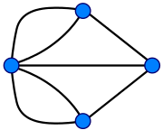

Königsberg, a város, mely utat tört a gráfelméletnek
A königsbergi hidak problémája egy híres matematikai probléma, amit Leonhard Euler oldott meg.

A probléma története, hogy a poroszországi Königsberg (most Kalinyingrád, Oroszország) városban hét híd ívelt át a várost átszelő Prégel folyón úgy, hogy ezek a folyó két szigetét is érintették. A königsbergiek azzal a kérdéssel fordultak Eulerhez, vajon végig lehet-e menni az összes hídon úgy, hogy mindegyiken csak egyszer haladjanak át, és egyúttal visszaérjenek a kiindulópontba. 1736-ban Euler bebizonyította, hogy ez lehetetlen.
Euler megoldása
A bizonyítás során Euler a problémát a gráfelmélet nyelvén fogalmazta meg, azaz leegyszerűsítette azt.
A földeket, azaz a folyó partjait beleértve a szigeteket is csomópontoknak, a hidakat pedig éleknek tekintette a mai megfogalmazás szerint. Az így létrehozott csomópontok és élek pedig egy gráfot határoznak meg.
Euler észrevette, hogy a problémát az így létrehozott gráf csomópontjainak a fokszámára lehet visszavezetni. A csomópont fokszáma alatt az adott csomóponthoz csatlakozó élek számát értjük. A konkrét esetben a hidak elhelyezkedése alapján megalkotott gráfban három pontnak 3 a fokszáma, egynek pedig 5. Euler rájött, hogy akkor és csak akkor létezik ebben az adott gráfban a hidakon pontosan egyszer végighaladó séta, ha minden csomópont fokszáma páros. A fenti feltételnek eleget tevő összefüggő gráfokat ma zárt Euler-gráfnak nevezzük, az élek sorozatát, amelyeken a bejárás megvalósul, pedig Euler-vonalnak illetve egy zárt Euler-vonalnak. A fenti feltételnek megfelelő bejárást zárt Euler-sétának hívjuk. Mivel a königsbergi hidak gráfjában több páratlan fokszámú csúcspont is található, ezért Euler eredményéből következik, hogy nem lehet bejárni a königsbergi hidakat a fent megkövetelt módon.
Matematikai jelentősége
A matematika történetében a königsbergi hidak problémáját, illetve ennek Euler-féle megoldását tartják az első gráfelméleti problémának. Azóta a gráfelmélet a kombinatorika egy önálló területévé vált.
Ezen túlmenően az, hogy Euler felismerte, hogy a probléma megoldásának a kulcsa a hidak, illetve pontosabban az egy partszakaszhoz kapcsolódó hidak számában, nem pedig ezek konkrét elhelyezkedésében keresendő, a topológiai szemlélet legkorábbi megjelenésének is tekinthető.